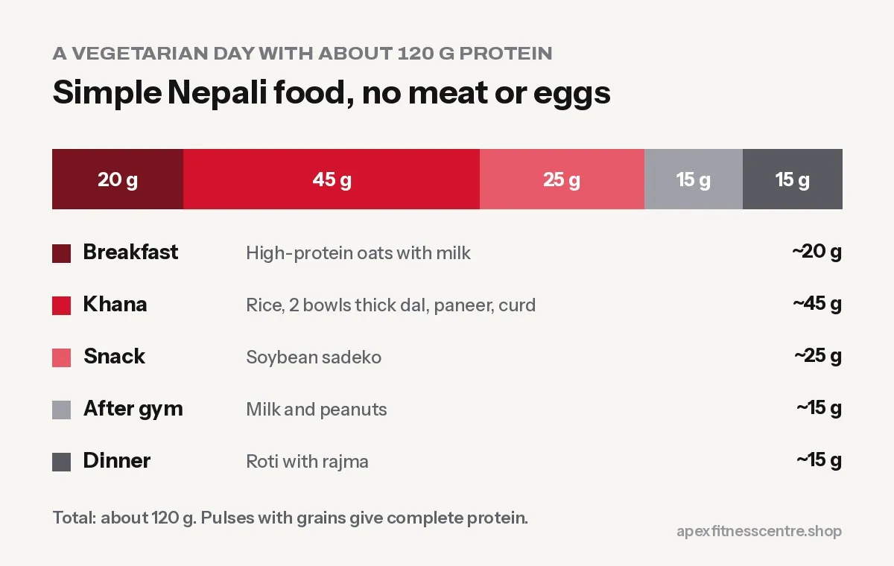

15 Protein-Rich Vegetarian Foods in Nepal (and How Much to Eat)
15 protein-rich vegetarian foods you can buy anywhere in Nepal, from paneer and soybean to kwati and peanuts, with amounts.
Vegetarians in Nepal can easily eat enough protein to build muscle and stay healthy. The trick is to eat a protein food at every meal, not just rice with a little dal. Here are 15 protein-rich vegetarian foods you can buy in any Nepali bazaar, with rough protein amounts.
Protein amounts are approximate and vary with brand, recipe and portion.
Dairy (the vegetarian’s best friend)
1. Paneer: about 18 g per 100 g
The most protein-dense vegetarian food in most kitchens. Paneer tarkari, chilli paneer or simply grilled paneer cubes with salt and pepper.
2. Curd (dahi): about 7 g per bowl (200 g)
Easy, cheap and good for digestion. Have it with lunch, or as a snack with fruit.
3. Milk: about 8 g per glass (250 ml)
One or two glasses a day adds a lot. Use it in oats or make a banana shake after training.
4. Hung curd or Greek-style yogurt: about 10 g per 100 g
Strained curd is thicker and higher in protein. You can make it at home by hanging curd in a cloth for a few hours.
5. Cheese: about 6 to 7 g per slice
Useful, but higher in fat and salt. Small amounts.
Pulses and legumes
6. Soybean chunks: about 25 g per 50 g dry
Among the cheapest and richest protein sources in Nepal. Soak, boil and use in sadeko, curry or with rice.
7. Thick dal: about 8 to 10 g per bowl
Make it thicker than usual and have two bowls instead of one.
8. Chana (chickpeas): about 12 to 15 g per cooked bowl
Chana chatpate, chana curry, or boiled with onion and lemon.
9. Rajma (kidney beans): about 12 to 15 g per cooked bowl
Rajma with rice is a complete, filling meal.
10. Kwati (mixed sprouted beans): about 10 to 14 g per bowl
Traditional, nutritious, and not just for Janai Purnima. Sprouting makes beans easier to digest.
11. Sprouted moong: about 6 to 8 g per bowl
Great raw in salads or lightly cooked as a snack.
Nuts, seeds and others
12. Peanuts: about 7 g per 30 g handful
Cheap and high in energy, so watch portions if you are losing weight.
13. Peanut butter: about 7 to 8 g per 2 tablespoons
On roti or bread for a quick breakfast.
14. Tofu: about 8 to 15 g per 100 g (depending on firmness)
Becoming easier to find in cities. Firm tofu works like paneer in curries.
15. High-protein oats: about 26 g per 100 g (Pintola, per pack)
A quick breakfast option, especially for people training in the morning.
A full vegetarian day with about 110 g protein
| Meal | Food | Protein |
|---|---|---|
| Breakfast | High-protein oats with milk | ~20 g |
| Khana | Rice, 2 bowls thick dal, paneer tarkari, curd | ~45 g |
| Snack | Soybean sadeko | ~25 g |
| After gym | Glass of milk + peanuts | ~15 g |
| Dinner | Roti with rajma | ~15 g |
| Total | ~120 g |
For more ideas, see our high-protein Nepali diet plan for muscle gain.

Combining proteins
Plant proteins differ in their amino acids. The good news: you do not need to combine them at every meal. Eating a variety of pulses, grains and dairy across the day covers your needs. Dal bhat itself is a classic combination of a pulse and a grain.
Frequently asked questions
Can vegetarians build muscle?
Yes. With enough total protein from dairy, pulses and soy, plus regular strength training, vegetarians build muscle just as well.
What is the highest protein vegetarian food in Nepal?
Per serving, soybean chunks and paneer are the richest. Soybean chunks are also one of the cheapest.
Is soy safe to eat regularly?
Normal food amounts of soy, such as soybean chunks a few times a week, are considered safe for both men and women based on human studies.
Do vegetarians need protein powder?
Not necessarily. Whey is a dairy product and suits lacto-vegetarians if food alone is not enough. Many reach their target with food alone.
Sources
- International Society of Sports Nutrition position stand: protein and exercise (Jäger et al., 2017)
- Protein supplementation and resistance training gains: systematic review and meta-analysis (Morton et al., British Journal of Sports Medicine, 2018)
General information, not medical advice.
General information, not medical advice. Ask a doctor if you have a health condition. Results vary from person to person.